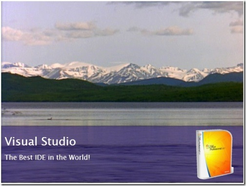

I've been meaning to blog about this for ages. Darko Jovisic, a Developer Evangelist from Croatia, did a couple of great demos during a presentation in September and he's released them on CodePlex for you to download and explore.
First demo:
Simple application that plays video and displays random commercials. List of products is extracted from a Excel spreadsheet.

Second demo (more complex than the first one):
I modified the Silverlight PageTurn Demo (where you have a book with pictures and you can turn page) so it takes Word document (instead of pictures) and prints it in the book.
Both applications are quite rudimentary and their aim was to show proof-of-concept and the platform independence of OpenXML. I'm releasing source code to the public and you can add features if you wish (just send me the updated version) or do with it whatever you want. I tried to comment the code so you can understand what is going on.
CodePlex links
First demo: http://www.codeplex.com/openxmlvideo
Second demo: http://www.codeplex.com/openxmlpageturn
Both applications need to run in IIS and they don't work in FireFox (because of different XML DOM parsers, support can be added).
I repeat that apps are rudimentary and there are bugs for sure.
I hope you can use these demos.
{kind=link}